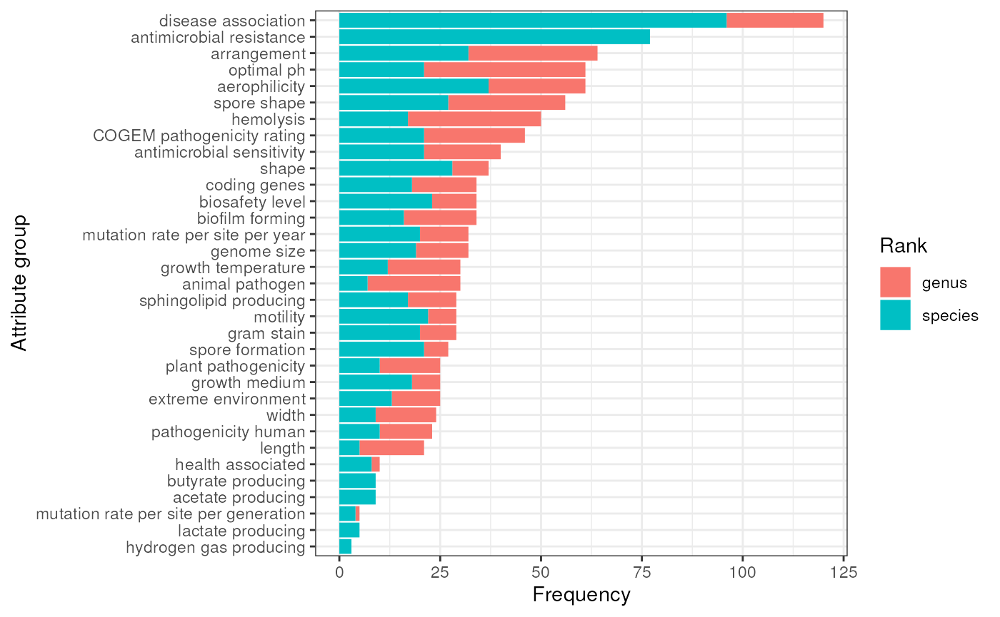

vignettes/articles/high_throughput_bsea_bsdb.Rmd
high_throughput_bsea_bsdb.Rmd
library(bugphyzzAnalyses)
library(bugphyzz)
library(purrr)
library(tidyr)
library(dplyr)
library(bugsigdbr)
library(taxPPro)
library(ggplot2)
library(ggbreak)
library(BiocParallel)
library(forcats)
## add a commentUse TypicalMicrobiomeSignatures to create background sets. Use a cutoff of 0.01 prevalence for filtering:
tms <- importTidyTMS(prevalence_threshold = 0.01) |>
mutate(
body_site = case_when(
body_site == 'feces' ~ 'stool',
body_site == 'nasalcavity' ~ 'nose',
body_site == 'oralcavity' ~ 'mouth',
TRUE ~ body_site
)
)Create sets at the genus and species ranks for each of the body sites (skin, vagina, oralcavity, nasalcavity, stool):
body_sites <- c(
mouth = 'mouth', vagina = 'vagina', stool = 'feces',
nose = 'nose', skin = 'skin of body'
)
ranks <- c('genus', 'species')
l <- length(body_sites) * length(ranks)
tms_sets <- vector('list', l)
n <- 1
for (i in seq_along(body_sites)) {
for (j in seq_along(ranks)) {
names(tms_sets)[n] <- paste0(names(body_sites)[i], '__', ranks[j])
tms_sets[[n]] <- tms |>
filter(body_site == names(body_sites)[i], rank == ranks[j]) |>
pull(taxid) |>
unique()
n <- n + 1
}
}
names(tms_sets)
#> [1] "mouth__genus" "mouth__species" "vagina__genus" "vagina__species"
#> [5] "stool__genus" "stool__species" "nose__genus" "nose__species"
#> [9] "skin__genus" "skin__species"Only use signatures with ‘decreased’ or ‘increased’ values in the ‘Abundance in Group 1’ column, i.e., signatures from experiments with differential abundance results.
Five body sites: skin, vagina, oral cavity, stool, and nasal cavity.
body_sites <- c(
mouth = 'mouth', vagina = 'vagina', stool = 'feces',
nose = 'nose', skin = 'skin of body'
)
bsdb <- importBugSigDB(version = 'devel') |>
filter(`Abundance in Group 1` %in% c('increased', 'decreased')) |>
filter(`Host species` == 'Homo sapiens')
ub <- getOntology('uberon')
#> Loading required namespace: ontologyIndex
bsdb_sets <- vector('list', l)
n <- 1
for (i in seq_along(body_sites)) {
for (j in seq_along(ranks)) {
sub_bsdb <- subsetByOntology(
df = bsdb, column = 'Body site', term = body_sites[i], ontology = ub
)
names(bsdb_sets)[n] <- paste0(names(body_sites)[i], '__', ranks[j])
sig <- bugsigdbr::getSignatures(
df = sub_bsdb, tax.id.type = 'ncbi', tax.level = ranks[j], min.size = 5
)
if (length(sig) > 0) {
bsdb_sets[[n]] <- sig
}
n <- n + 1
}
}
bsdb_sets <- discard(bsdb_sets, is.null)
names(bsdb_sets)
#> [1] "mouth__genus" "mouth__species" "vagina__genus" "vagina__species"
#> [5] "stool__genus" "stool__species" "nose__genus" "nose__species"
#> [9] "skin__genus" "skin__species"
tms_sets <- tms_sets[names(bsdb_sets)]
background_sets <- vector('list', length(bsdb_sets))
for (i in seq_along(background_sets)) {
names(background_sets)[i] <- names(bsdb_sets)[i]
background_sets[[i]] <- map(
bsdb_sets[[names(bsdb_sets)[i]]], ~ {
unique(c(.x, tms_sets[[ names(bsdb_sets)[i] ]]))
}
)
}
names(background_sets)
#> [1] "mouth__genus" "mouth__species" "vagina__genus" "vagina__species"
#> [5] "stool__genus" "stool__species" "nose__genus" "nose__species"
#> [9] "skin__genus" "skin__species"Import data:
bp <- as_tibble(importBugphyzz(version = 'devel'))
#> Using data downloaded on 2023-08-14 04:21:37.Create signatures at the genus level:
bp_sigs_gn <- getBugphyzzSignatures(
df = bp, tax.id.type = 'NCBI_ID', tax.level = 'genus', min.size = 10
)
head(names(bp_sigs_gn))
#> [1] "bp:aerophilicity|aerobic|g"
#> [2] "bp:aerophilicity|aerotolerant|g"
#> [3] "bp:aerophilicity|anaerobic|g"
#> [4] "bp:aerophilicity|facultatively anaerobic|g"
#> [5] "bp:animal pathogen|animal pathogen--FALSE|g"
#> [6] "bp:animal pathogen|animal pathogen--TRUE|g"Create signatures at the species level:
bp_sigs_sp <- getBugphyzzSignatures(
df = bp, tax.id.type = 'NCBI_ID', tax.level = 'species', min.size = 10
)
head(names(bp_sigs_sp))
#> [1] "bp:acetate producing|acetate producing--TRUE|s"
#> [2] "bp:aerophilicity|aerobic|s"
#> [3] "bp:aerophilicity|aerotolerant|s"
#> [4] "bp:aerophilicity|anaerobic|s"
#> [5] "bp:aerophilicity|facultatively anaerobic|s"
#> [6] "bp:animal pathogen|animal pathogen--FALSE|s"#> top signatures by odds ratio
nworkers <- parallel::detectCores()
enrichment_res <- bplapply(
X = seq_along(bsdb_sets),
BPPARAM = MulticoreParam(workers = nworkers),
FUN = function(i) {
if (grepl('genus', names(bsdb_sets)[i])) {
res <- runEnrichment(
bsdb_sets = bsdb_sets[[i]],
background_sets = background_sets[[i]],
bp_sigs = bp_sigs_gn,
bsdb = bsdb,
fdr_ths = 0.1
) |>
mutate(comb = names(bsdb_sets)[[i]])
} else if (grepl('species', names(bsdb_sets)[i])) {
res <- runEnrichment(
bsdb_sets = bsdb_sets[[i]],
background_sets = background_sets[[i]],
bp_sigs = bp_sigs_sp,
bsdb = bsdb,
fdr_ths = 0.1
) |>
mutate(comb = names(bsdb_sets)[[i]])
}
return(res)
}) |>
discard(~ !nrow(.x))
enrichDF <- bind_rows(enrichment_res) |>
separate(col = 'comb', into = c('body_site', 'rank'), sep = '__') |>
mutate(Attribute_group = sub('^bp:(.*)\\|.*\\|\\w$', '\\1', bp_sig))
count(enrichDF, body_site, rank)
#> # A tibble: 8 × 3
#> body_site rank n
#> <chr> <chr> <int>
#> 1 mouth genus 33
#> 2 mouth species 43
#> 3 skin genus 6
#> 4 skin species 33
#> 5 stool genus 401
#> 6 stool species 594
#> 7 vagina genus 21
#> 8 vagina species 5
summary1 <- enrichDF |>
count(Attribute_group, rank) |>
group_by(Attribute_group) |>
mutate(total_n = sum(n)) |>
ungroup() |>
arrange(total_n) |>
mutate(Attribute_group = fct_inorder(Attribute_group))
plot1 <- summary1 |>
ggplot(aes(Attribute_group, n)) +
geom_col(aes(fill = rank)) +
scale_fill_discrete(name = 'Rank') +
labs(
x = 'Attribute group', y = 'Frequency'
) +
theme_bw() +
coord_flip()
plot1
attr_grp_nms <- unique(summary1$Attribute_group)
sessioninfo::session_info()
#> ─ Session info ───────────────────────────────────────────────────────────────
#> setting value
#> version R version 4.3.0 (2023-04-21)
#> os Ubuntu 22.04.2 LTS
#> system x86_64, linux-gnu
#> ui X11
#> language en
#> collate en_US.UTF-8
#> ctype en_US.UTF-8
#> tz Etc/UTC
#> date 2023-08-14
#> pandoc 2.19.2 @ /usr/local/bin/ (via rmarkdown)
#>
#> ─ Packages ───────────────────────────────────────────────────────────────────
#> package * version date (UTC) lib source
#> aplot 0.2.0 2023-08-09 [1] RSPM (R 4.3.0)
#> BiocFileCache 2.8.0 2023-04-25 [1] Bioconductor
#> BiocParallel * 1.34.2 2023-05-22 [1] Bioconductor
#> bit 4.0.5 2022-11-15 [1] RSPM (R 4.3.0)
#> bit64 4.0.5 2020-08-30 [1] RSPM (R 4.3.0)
#> blob 1.2.4 2023-03-17 [1] RSPM (R 4.3.0)
#> bold 1.3.0 2023-05-02 [1] RSPM (R 4.3.0)
#> bslib 0.5.0 2023-06-09 [1] RSPM (R 4.3.0)
#> bugphyzz * 0.0.1.3 2023-08-14 [1] Github (waldronlab/bugphyzz@3ad61e6)
#> bugphyzzAnalyses * 0.1.0 2023-08-14 [1] local
#> bugsigdbr * 1.6.4 2023-07-30 [1] Bioconductor
#> cachem 1.0.8 2023-05-01 [1] RSPM (R 4.3.0)
#> cli 3.6.1 2023-03-23 [1] RSPM (R 4.3.0)
#> codetools 0.2-19 2023-02-01 [2] CRAN (R 4.3.0)
#> colorspace 2.1-0 2023-01-23 [1] RSPM (R 4.3.0)
#> conditionz 0.1.0 2019-04-24 [1] RSPM (R 4.3.0)
#> crayon 1.5.2 2022-09-29 [1] RSPM (R 4.3.0)
#> crul 1.4.0 2023-05-17 [1] RSPM (R 4.3.0)
#> curl 5.0.1 2023-06-07 [1] RSPM (R 4.3.0)
#> data.table 1.14.8 2023-02-17 [1] RSPM (R 4.3.0)
#> DBI 1.1.3 2022-06-18 [1] RSPM (R 4.3.0)
#> dbplyr 2.3.3 2023-07-07 [1] RSPM (R 4.3.0)
#> desc 1.4.2 2022-09-08 [1] RSPM (R 4.3.0)
#> digest 0.6.33 2023-07-07 [1] RSPM (R 4.3.0)
#> dplyr * 1.1.2 2023-04-20 [1] RSPM (R 4.3.0)
#> evaluate 0.21 2023-05-05 [1] RSPM (R 4.3.0)
#> fansi 1.0.4 2023-01-22 [1] RSPM (R 4.3.0)
#> farver 2.1.1 2022-07-06 [1] RSPM (R 4.3.0)
#> fastmap 1.1.1 2023-02-24 [1] RSPM (R 4.3.0)
#> filelock 1.0.2 2018-10-05 [1] RSPM (R 4.3.0)
#> forcats * 1.0.0 2023-01-29 [1] RSPM (R 4.3.0)
#> fs 1.6.3 2023-07-20 [1] RSPM (R 4.3.0)
#> generics 0.1.3 2022-07-05 [1] RSPM (R 4.3.0)
#> ggbreak * 0.1.2 2023-06-26 [1] RSPM (R 4.3.0)
#> ggfun 0.1.2 2023-08-09 [1] RSPM (R 4.3.0)
#> ggplot2 * 3.4.2 2023-04-03 [1] RSPM (R 4.3.0)
#> ggplotify 0.1.2 2023-08-09 [1] RSPM (R 4.3.0)
#> glue 1.6.2 2022-02-24 [1] RSPM (R 4.3.0)
#> gridGraphics 0.5-1 2020-12-13 [1] RSPM (R 4.3.0)
#> gtable 0.3.3 2023-03-21 [1] RSPM (R 4.3.0)
#> highr 0.10 2022-12-22 [1] RSPM (R 4.3.0)
#> hoardr 0.5.3 2023-01-26 [1] RSPM (R 4.3.0)
#> htmltools 0.5.6 2023-08-10 [1] RSPM (R 4.3.0)
#> httpcode 0.3.0 2020-04-10 [1] RSPM (R 4.3.0)
#> httr 1.4.6 2023-05-08 [1] RSPM (R 4.3.0)
#> jquerylib 0.1.4 2021-04-26 [1] RSPM (R 4.3.0)
#> jsonlite 1.8.7 2023-06-29 [1] RSPM (R 4.3.0)
#> knitr 1.43 2023-05-25 [1] RSPM (R 4.3.0)
#> labeling 0.4.2 2020-10-20 [1] RSPM (R 4.3.0)
#> lifecycle 1.0.3 2022-10-07 [1] RSPM (R 4.3.0)
#> magrittr 2.0.3 2022-03-30 [1] RSPM (R 4.3.0)
#> memoise 2.0.1 2021-11-26 [1] RSPM (R 4.3.0)
#> mgsub 1.7.3 2021-07-28 [1] RSPM (R 4.3.0)
#> munsell 0.5.0 2018-06-12 [1] RSPM (R 4.3.0)
#> ontologyIndex 2.11 2023-05-30 [1] RSPM (R 4.3.0)
#> patchwork 1.1.2 2022-08-19 [1] RSPM (R 4.3.0)
#> pillar 1.9.0 2023-03-22 [1] RSPM (R 4.3.0)
#> pkgconfig 2.0.3 2019-09-22 [1] RSPM (R 4.3.0)
#> pkgdown 2.0.7 2022-12-14 [1] RSPM (R 4.3.0)
#> purrr * 1.0.2 2023-08-10 [1] RSPM (R 4.3.0)
#> R6 2.5.1 2021-08-19 [1] RSPM (R 4.3.0)
#> ragg 1.2.5 2023-01-12 [1] RSPM (R 4.3.0)
#> rappdirs 0.3.3 2021-01-31 [1] RSPM (R 4.3.0)
#> rlang 1.1.1 2023-04-28 [1] RSPM (R 4.3.0)
#> rmarkdown 2.23 2023-07-01 [1] RSPM (R 4.3.0)
#> rprojroot 2.0.3 2022-04-02 [1] RSPM (R 4.3.0)
#> RSQLite 2.3.1 2023-04-03 [1] RSPM (R 4.3.0)
#> sass 0.4.7 2023-07-15 [1] RSPM (R 4.3.0)
#> scales 1.2.1 2022-08-20 [1] RSPM (R 4.3.0)
#> sessioninfo 1.2.2 2021-12-06 [1] RSPM (R 4.3.0)
#> stringi 1.7.12 2023-01-11 [1] RSPM (R 4.3.0)
#> stringr 1.5.0 2022-12-02 [1] RSPM (R 4.3.0)
#> systemfonts 1.0.4 2022-02-11 [1] RSPM (R 4.3.0)
#> taxa 0.4.2 2022-04-12 [1] RSPM (R 4.3.0)
#> taxize 1.0 2023-08-14 [1] Github (ropensci/taxize@bcff2a6)
#> taxizedb 0.3.1 2023-04-03 [1] RSPM (R 4.3.0)
#> taxPPro * 0.1.0 2023-08-14 [1] Github (sdgamboa/taxPPro@d2b4c6f)
#> textshaping 0.3.6 2021-10-13 [1] RSPM (R 4.3.0)
#> tibble 3.2.1 2023-03-20 [1] RSPM (R 4.3.0)
#> tidyr * 1.3.0 2023-01-24 [1] RSPM (R 4.3.0)
#> tidyselect 1.2.0 2022-10-10 [1] RSPM (R 4.3.0)
#> tzdb 0.4.0 2023-05-12 [1] RSPM (R 4.3.0)
#> utf8 1.2.3 2023-01-31 [1] RSPM (R 4.3.0)
#> uuid 1.1-0 2022-04-19 [1] RSPM (R 4.3.0)
#> vctrs 0.6.3 2023-06-14 [1] RSPM (R 4.3.0)
#> vroom 1.6.3 2023-04-28 [1] RSPM (R 4.3.0)
#> withr 2.5.0 2022-03-03 [1] RSPM (R 4.3.0)
#> xfun 0.40 2023-08-09 [1] RSPM (R 4.3.0)
#> xml2 1.3.5 2023-07-06 [1] RSPM (R 4.3.0)
#> yaml 2.3.7 2023-01-23 [1] RSPM (R 4.3.0)
#> yulab.utils 0.0.7 2023-08-09 [1] RSPM (R 4.3.0)
#>
#> [1] /usr/local/lib/R/site-library
#> [2] /usr/local/lib/R/library
#>
#> ──────────────────────────────────────────────────────────────────────────────